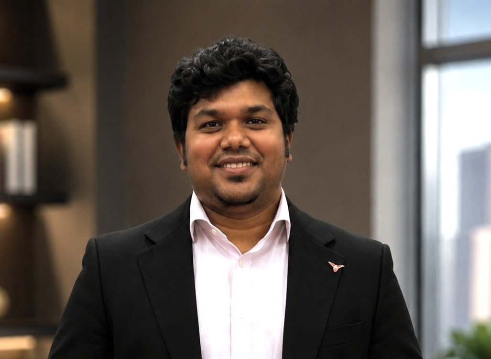

Founded in 2025, QuboolHain Matrimonial is dedicated to helping Muslim individuals and families find meaningful, lifelong relationships through trusted, values-based matchmaking. We combine modern technology with Islamic values to create a safe, respectful, and reliable platform for marriage.
Our mission is to help Muslim individuals and families build strong, lifelong marriages through trusted, secure, and values-based matchmaking. We are committed to creating a respectful platform that promotes honesty, compatibility, and shared Islamic values while making the search for a life partner simple and meaningful.
Connect individuals and families seeking marriage with compatible, verified matches.
A small of team of matchmakers, developers, and community moderators dedicated to your search.
Privacy-first profiles, manual verification, and no unsolicited contact between members.
The people behind QuboolHain Matrimonial
Leads the vision of QuboolHain Matrimonial and oversees platform development, community partnerships, and strategic growth.
Reviews member profiles and guides individuals and families through the matchmaking process.

Plans community networking events, matrimonial meetups, and family gatherings to encourage meaningful connections in a respectful environment.